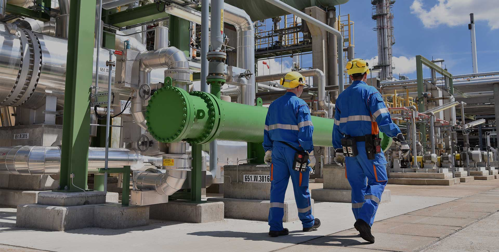
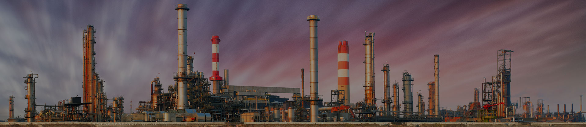
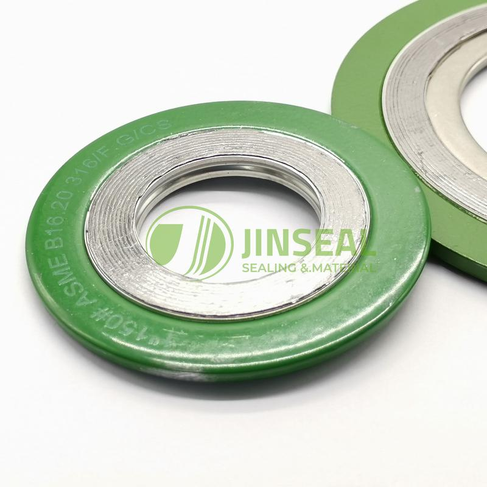

About JinSeal
High-performance sealing products manufacturer since 1997.
From Cixi, China to demanding industrial sites worldwide, JinSeal provides metallic and non-metallic gaskets, gland packing, gasket sheets, sealing materials and tailored sealing solutions.
8,000+
sqm production base
ISO 9001
quality management
Global
industrial supply
Our Story
One of China's experienced sealing products manufacturers.
JinSeal has been acknowledged as a leading manufacturer of high-performance sealing products since its establishment in 1997 in Cixi, China. With a production base of over 8,000 sqm and advanced machinery and facilities, JinSeal offers customers both high-standard products and individually tailored sealing solutions.
After years of development, JinSeal has built an extensive global client base. Its products are widely used in chemicals and petrochemicals, refining, pulp and paper, power generation, semiconductor, primary metals, food and pharmaceuticals, mining and OEM applications.
Established in 1997
Cixi, Zhejiang
International brand upgrade in 2013

verified
Certified Quality
ISO 9001 since 2000Our Impact
Built for steady industrial supply.
JinSeal combines long-term manufacturing experience, a broad sealing product range and strict quality control to support customers in demanding working conditions.
What We Do
End-to-end sealing manufacturing support.
From product recommendation to delivery support, JinSeal keeps the sealing supply process clear, practical and quality-focused.
01
design_services
Product Engineering
Recommend suitable gasket, packing, sheet material or accessory options based on medium, temperature, pressure, flange standard and drawings.
02
precision_manufacturing
Manufacturing
Produce metallic gaskets, non-metallic gaskets, gland packing, gasket sheets, gasket materials and related sealing accessories.
03
fact_check
Quality Control
Monitor low return levels, delivery performance and customer satisfaction through a strict quality management system.
04
local_shipping
Global Supply
Support industrial buyers, OEM customers and distributors with stable sealing product supply and project communication.

Our Facility
Production base in Cixi, Zhejiang, China.
JinSeal's production base is supported by advanced machinery and facilities for industrial sealing products. The company continuously improves product quality, manufacturing efficiency and customized solution capability.
factory
Advanced Equipment
Machinery and facilities for a broad sealing product range.
inventory_2
Broad Product Range
Gaskets, packing, sheets, semi-finished materials and accessories.
groups
Experienced Team
Long-term sealing know-how for industrial and OEM customers.
Brand Values
We Seal, You Smile.
JinSeal's mission is to deliver world-class sealing solutions. Its brand values are trust, leadership and sustainability.
Trust
JinSeal builds trust through quality, safety and reliability, creating value with customized solutions and consistent product performance.
Leadership
As an active member of sealing industry associations, JinSeal keeps investing in product innovation and international expansion.
Sustainability
Continuity matters in durable sealing products and environmental commitment, supporting long-term win-win cooperation.
Quality Assurance
Quality has always been the key.
JinSeal continually monitors progress toward perfection through quality indicators including low return levels, strong delivery performance and high customer satisfaction.
Industry Recognition
- check_circleExecutive member of the Static Sealing Branch of CHPSA and Cixi Seal Association.
- check_circleInvolved in drafting and reviewing national sealing machinery standards.
- check_circleElected as president member of Cixi Seal Association in 2006.
- check_circleElected as member of CHPSA in 2009 and vice president member of the Machinery and Filling Static Sealing Branch in 2010.
Milestones
Key moments in JinSeal's development.
A condensed timeline based on the old JinSeal About page, focused on brand growth, quality system and industry recognition.
JinSeal was officially registered and established.
Spiral wound gasket was awarded for excellent quality by the State Administration of Machinery Industry.
Plant established in Hushan, Cixi, China and certified with ISO 9001.
Plant and headquarters building established in Henghe Industrial Zone, Cixi, China.
Elected as vice president member of the Machinery and Filling Static Sealing Branch of CHPSA.
Corporate identity system upgraded and English brand name changed from Jinshan to JinSeal.
Industries We Serve
Sealing solutions for demanding sectors.
JinSeal products are used across process, energy, manufacturing and OEM applications.
Chemicals & Petrochemicals
Refining
Pulp & Paper
Power Generation
Semiconductor
Food & Pharmaceuticals
Mining
OEM Equipment
Send Inquiry
Need a sealing product recommendation?
Share your working medium, temperature, pressure, flange standard or drawing. JinSeal can help recommend suitable gasket, packing, sheet material or sealing accessories.